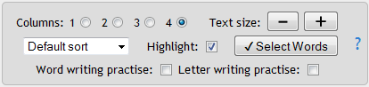

The Activity Controls section contains a variety of options that let you change the
appearance and layout of the activity on the page. If you are creating word lists it does not
affect which words are selected, only how they are displayed on the page.
Columns 1 2 ...
Selecting this displays the vocabulary list with the specified number of columns. The
words can also be printed using the browser's print function. You may have to adjust the
text size and/or the number of columns to fit the words to the width of the printed page.
You can add or less more column buttons by clicking on the Settings
icon on the Home page.
Text size
Clicking the plus and minus buttons changes the size of the words on the page.
Sorting
You can sort the words on the page in different ways.
The default sort leaves the words in the order they occur in the database.
Sort A-Z sorts the words in unicode sort order. This might be different than
the sort order of the language.
Sort randomly sorts the words ... well, randomly.
Sort from end is useful when a language has suffixes.
Sort by CV type sorts the words by syllable shape where each consonant is treated as a "c" and
each vowel is treated as a "v".
Sort by length sorts the words from short to long.
Highlight
Selecting this checkbox turns the focus letter red. Unselecting this checkbox turns the
focus letter black.
Clicking this button creates a new window and uses the vocabulary list to make a
printable page for writing excercises with the current vocabulary.
You can modify the page by clicking on any line to remove the word and line from the page.